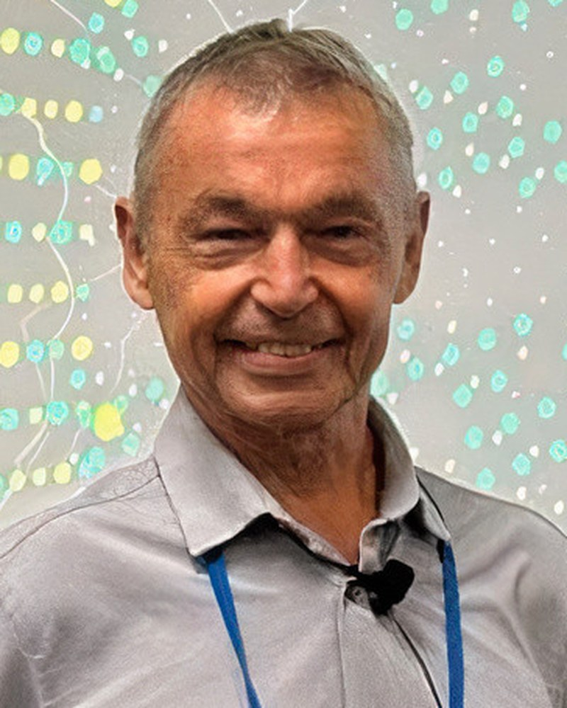

MIG-Tech Lab, Medford, OR, USA

The neonatal synesthesia hypothesis (Maurer & Mondloch) holds that every human infant is born perceiving through an undifferentiated, cross-modal sensory field—where touch, sight, sound, and movement are not yet functionally separated. Normal cognitive development proceeds by selectively pruning these cross-channel connections, producing the discrete sensory modalities we recognize as "standard" adult perception. This paper proposes that the phenomena historically categorized as "extrasensory" perception are not extra-sensory at all, but pre-sensory—representing partial recoveries of, or trained access to, the original synesthetic field that developmental pruning suppressed. We test this hypothesis against formerly classified Soviet biophysical data (1960s–1980s), drawing on the author's direct access to researchers and participants involved in these state-sponsored programs. Three core cases, each representing a distinct modality of anomalous cross-modal output, are analyzed: Rosa Kuleshova (Extra-Ocular Vision): Following severe neurological illness (rheumatic arachnoiditis), Kuleshova demonstrated the ability to read text and discern colors through skin contact. Rather than interpreting this as an acquired "new" ability, we analyze it as illness-induced de-pruning—a reversal of developmental sensory narrowing that restored cross-modal access, effectively re-opening channels the adult brain had suppressed. Soviet laboratory tests confirmed her capacity to read fully concealed documents and differentiate colors via thermal and pressure gradients across her entire dermal surface. Ninel Kulagina (Psychokinesis / Biofield Output): Under controlled observation, Kulagina demonstrated telekinetic and biofield effects accompanied by extreme metabolic cost — pulse rates reaching 240 bpm, weight loss up to 700 g per session, visible electrical discharge, and premature death linked to chronic systemic strain. We interpret this as consciousness forcing output through channels the "narrow" adult body maintains as suppressed—at a metabolic price proportional to the degree of pruning being overridden. Djuna Davitashvili (Non-Contact Healing / EM Field Projection): Laboratory instruments documented Davitashvili generating measurable photons, heat, and controllable electromagnetic fields from her hands, accompanied by internal thermal redistribution—a phenomenon termed "thermal pumping" by Soviet physicists Godik and Gulyaev. Her premature death from "extreme wear" confirms the metabolic signature. A fourth case, stage telepath Wolf Messing, provides contrast: his ideomotor "muscle reading"—translating tactile input into cognitive content—represents a minimally costly, trained form of cross-modal (synesthetic) perception, later formalized as Applied Kinesiology. Across all cases, a consistent metabolic signature emerges: the greater the degree of cross-modal access, the higher the biophysical cost. We formalize this relationship as the Transceiver's Cost (Nazarov, 2026)—proposing that the human body functions as a resonant transceiver whose operational cost scales with the distance between current (pruned) perception and the original (synesthetic) field. This framework yields practical protocols for Transceiver Hygiene—phase-shielding, rhythmic recharging, and circulatory energy models—designed to sustain practitioners who operate at the frontiers of cross-modal perception. This model reframes ESP from pseudoscience to a measurable domain of embodied cognition, offering novel connections to predictive processing theory (Clark; Friston). Analogous cross-modal phenomena are observable in trained kinesthetic practices — Tango (bidirectional ideomotor dialogue), Aikido (pre-strike intent detection), Eurythmy (visible speech), and dowsing (amplified somatosensory transduction) — suggesting that pre-sensory capacities are latent, trainable, and not pathological.
Dr. Igor Nazarov is the founder of MIG-Tech Lab, Inc. He holds a BS in Molecular Biophysics, an MS in Nuclear Physics and PhD in Chemical Physics from the Moscow Institute of Physics and Technology, USSR. Author of over forty scientific publications including books. Recent work focuses on the biophysics of embodied cognition and the metabolic cost of healing modalities.